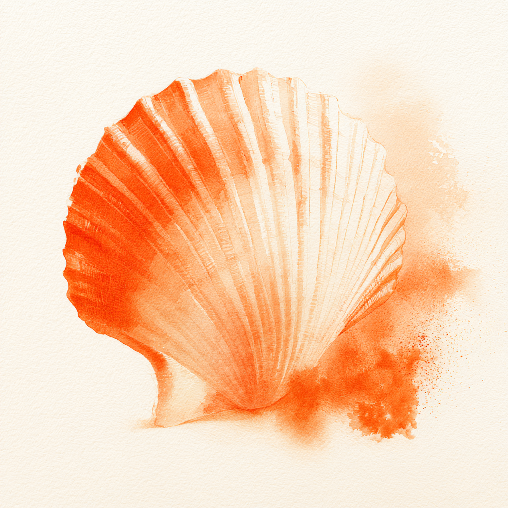

Dein Körper
sagt Nein.
Und hat recht damit.
Zwei Übungen, ein paar Sätze, und das,
was ich dir gerne persönlich sagen würde.
Dr. med. Sabrina Kising
Fachärztin für Gynäkologie und Geburtshilfe
Sexualtherapeutin · Paartherapeutin
liebeheilung.de
Ein Brief
~
Warum ich dir dieses
Heft schreibe.
Du hast dir dieses Heft geholt. Das bedeutet: du bist schon einen Schritt gegangen.
Nicht zu mir. Aber zu dir.
Vielleicht war das der erste Schritt seit Jahren. Vielleicht seit der ersten
Untersuchung, bei der jemand gesagt hat: „Entspannen Sie sich."
Und du wolltest. Und dein Körper hat nicht gehorcht.
Ich schreibe dir das nicht als Ratgeber. Ich schreibe es als Frau, die Ärztin ist.
Und die weiß, dass dein Körper sich nicht anstellt. Er schützt dich.
Auf meiner Website steht, was Vaginismus ist. Hier steht, was du tun
kannst. Nicht alles. Nichts, was dich überfordert. Aber zwei Dinge, die du heute
machen kannst. Und ein paar Sätze, die dir helfen, wenn du sie brauchst.
Du musst nicht alles auf einmal verstehen. Du musst nur wissen, dass es einen
nächsten Schritt gibt. Das ist er.
Sabrina
Verstehen
~
Was dein Körper macht
(und warum er recht hat).
Dein Beckenboden spannt an. Ohne dich zu fragen. Nicht weil du zu eng bist.
Nicht weil du dich anstellst. Weil er etwas gelernt hat: Hier droht Gefahr.
Das ist kein Defekt. Das ist ein Schutzreflex, der sich verselbstständigt hat.
Dein Körper hat gut aufgepasst. Nur etwas zu gut.
Der Kreislauf sieht so aus:
Angst → Anspannung → Schmerz → mehr Angst
Jede Runde dreht er schneller. Das ist der eigentliche Gegner.
Nicht dein Körper. Nicht du.
Aber hier ist das Wichtige: was dein Körper gelernt hat, kann er anders lernen.
Nicht durch Druck. Nicht durch „einfach entspannen". Sondern durch
Sicherheit. Durch Spüren. Durch kleine Schritte.
Die nächste Seite ist ein erster Schritt.
Übung 1 · 5 Minuten
~
Deinen Beckenboden
spüren.
Warum diese Übung?
Weil dein Beckenboden jetzt etwas tut, ohne dass du es spürst. Er spannt an.
Automatisch. Du merkst es nicht — bis es weh tut. Diese Übung hilft dir,
ihn zum ersten Mal zu spüren. Nicht zu verändern. Nur zu spüren.
So geht es:
- Setz dich hin. Oder leg dich hin. Wo du sicher bist.
- Atme ein. Langsam.
- Atme aus. Langsam.
- Spanne deinen Beckenboden an — so wie wenn du den Urin zurückhältst.
- Halte 3 Sekunden.
- Lass los. Langsam. Nicht abrupt.
- Spüre nach: Was ist da? Wärme? Druck? Leere? Nichts?
- Warte 5 Sekunden. Atme.
- Wiederhole 3×.
Das Wichtige: Du veränderst nichts. Du spürst nur.
Das ist der erste Schritt: deinen Körper kennenlernen. Nicht bewerten. Nur spüren.
Wenn du das zum ersten Mal machst, spürst du vielleicht: da ist Anspannung.
Da ist etwas, das hält. Das ist dein Beckenboden. Er ist nicht dein Feind.
Er ist dein Wächter. Und du lernst ihn gerade kennen.
Übung 2 · Nächster Schritt
~
Öffnen lernen.
Warum diese Übung?
Weil dein Beckenboden gut im Anspannen ist. Aber vielleicht nicht mehr im Öffnen.
Das Öffnen ist der schwierige Teil — weil es Kontrolle abgibt.
Genau die Kontrolle, die dein Körper festhält.
So geht es:
- Leg eine Hand auf deinen Bauch oder Oberschenkel.
- Spanne die Hand zur Faust — und gleichzeitig deinen Beckenboden an.
- Halte beides 3–5 Sekunden. Spüre die Anspannung in beiden.
- Jetzt: öffne beides gleichzeitig. Langsam. Stück für Stück.
- Stell dir vor, du öffnest deine Hand. Nicht schließen, nicht festhalten — öffnen.
- Spüre, wie die Anspannung weniger wird. In Hand und Beckenboden gleichzeitig.
- Wenn sie ganz weg ist: atme. Spüre, was sich verändert hat.
- Wiederhole 5×.
Das Wichtige: Das Öffnen ist das Neue.
Nicht das Anspannen. Dein Körper kann anspannen. Er muss lernen, dass es sicher ist,
sich zu entspannen, sich zu öffnen. Das geht nicht an einem Tag.
Aber jeder Versuch sagt deinem Körper: Hier ist es sicher. Du darfst entspannen.
Wenn du entspannst und Angst kommt — das ist normal. Dein Körper hat gelernt:
sich entspannen, sich öffnen ist gefährlich. Er darf lernen: sich zu öffnen kann
sicher sein. In deinem Tempo. In deiner Zeit. Niemand drängt.
Für dich
~
Sätze, die du dir selbst sagen kannst.
Für die Momente, in denen es passiert. Und du nicht weißt, was du denken sollst.
Wenn die Anspannung kommt:
„Mein Körper schützt mich. Er hat recht damit. Aber er muss nicht mehr."
Wenn du dich schämst:
„Ich stelle mich nicht an. Mein Körper hat etwas gelernt. Und er kann etwas anderes lernen."
Wenn du Angst vor dem nächsten Mal hast:
„Ich muss heute nichts können. Ich muss nur hier sein. Einen Schritt."
Wenn du denkst: das geht nie weg:
„Über vier von fünf Frauen finden einen Weg. Ich bin nicht die Ausnahme."
Wenn du allein damit bist:
„Viele Frauen tragen das jahrelang allein. Ich trage es nicht mehr allein."
Wenn du nicht weißt, ob du Hilfe brauchst:
„Ich muss nicht wissen, ob es schlimm genug ist. Ich muss nur wissen, ob ich es nicht mehr allein tragen will."
Für dich und deinen Partner
~
Sätze, die du deinem
Partner sagen kannst.
Für wenn du es nicht selbst erklären kannst. Aber es sagen musst.
Wenn er fragt, warum du keine Lust hast:
„Es ist nicht keine Lust. Mein Körper macht zu. Ich will, aber er nicht. Es hat nichts mit dir zu tun."
Wenn er denkt, er tue etwas falsch:
„Du tust nichts falsch. Mein Körper reagiert auf etwas, das vor dir war. Du bist nicht das Problem. Du bist der Mensch, der es mit mir trägt."
Wenn er fragt, was er tun kann:
„Frag nicht. Dräng nicht. Sei da. Wenn ich Nähe will, komme ich. Wenn ich Abstand brauche, nimm es nicht persönlich."
Wenn er schweigt und du nicht weißt, was er denkt:
„Ich weiß auch nicht, was ich denken soll. Aber ich weiß, dass ich das nicht allein tragen will. Willst du es mit mir tragen?"
Wenn ihr beide nicht wisst, wie es weitergeht:
„Wir müssen das nicht heute lösen. Wir müssen nur wissen, dass wir es zusammen machen. Nicht gegeneinander."
Wenn du ihm sagen willst, was du brauchst, aber nicht kannst:
„Ich brauche, dass du mich nicht fragst. Nicht heute. Nur da bist. Das reicht."
Vaginismus betrifft selten nur eine Person. Da ist oft ein Partner, der nicht weiß,
was er tun soll. Diese Sätze sind kein Ersatz für ein Gespräch. Sie sind ein Anfang.
Wenn du sie nicht sagen kannst: zeig ihm diese Seite.
Der nächste Schritt
~

Du musst nicht heute ankommen.
Du musst nur gehen.
Du hast zwei Übungen. Du hast Sätze. Du hast einen Brief von mir.
Das ist nicht alles. Aber es ist ein Anfang.
Wenn du spürst: ich will mehr als Übungen allein — dann ist der nächste
Schritt ein Gespräch.
Und wenn du noch nicht bereit bist: das ist auch ein Schritt. Du hast dieses Heft geholt.
Du hast gelesen. Du hast gespürt. Das ist mehr, als du gestern getan hast.
Sabrina
Dr. med. Sabrina Kising · liebeheilung.de
Quellen:
Meta-Analyse Journal of Sexual Medicine 2025/26 (18 Studien, 863 Patientinnen);
PubMed 15992873 (Kaplan-Desensibilisierung).
Dieses Heft ersetzt keine ärztliche Diagnose oder Behandlung. Es ist eine Einladung.
Mehr nicht. Aber auch nicht weniger.